Raw emotion, real moments, and the little things you never want to forget — captured in a timeless documentary-style film
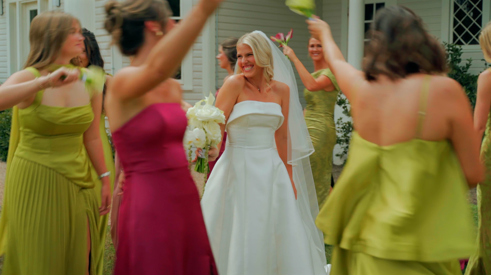
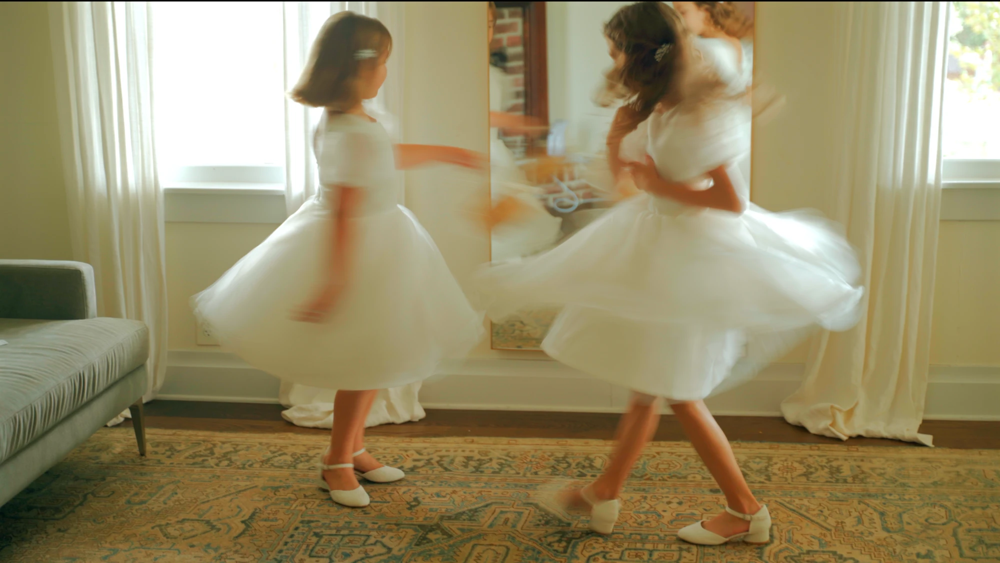
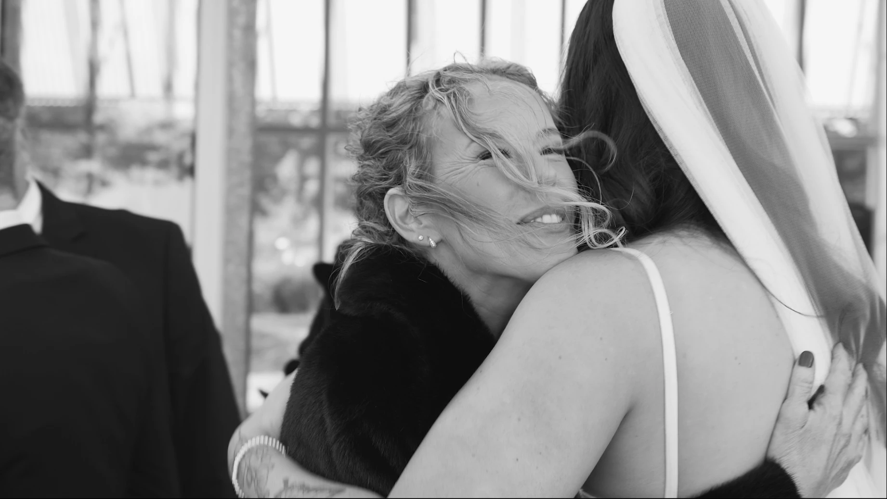
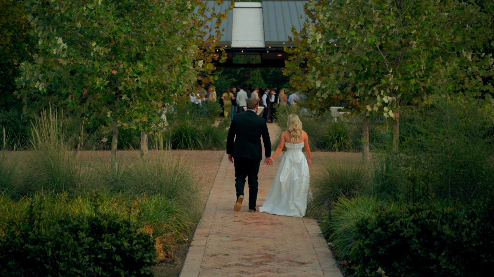
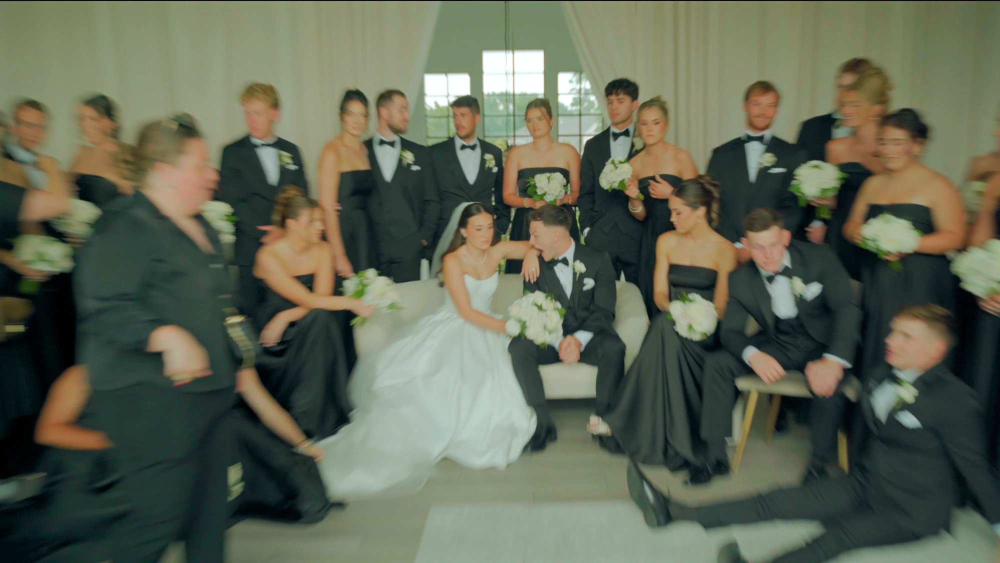
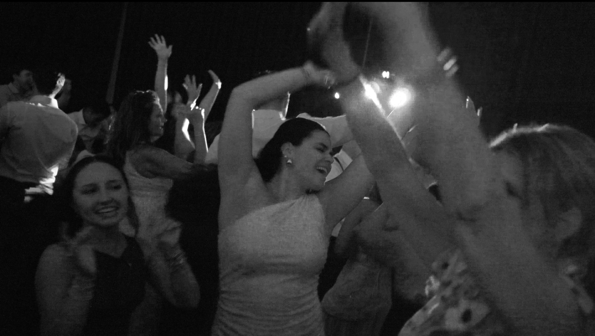
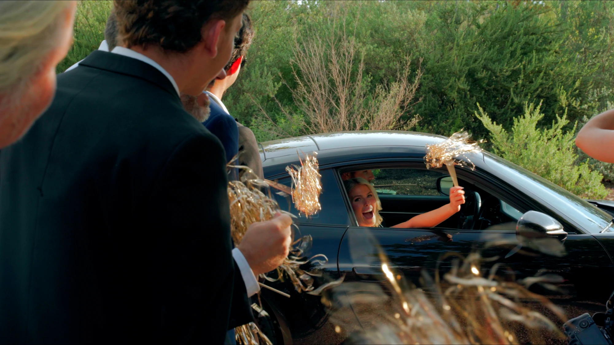
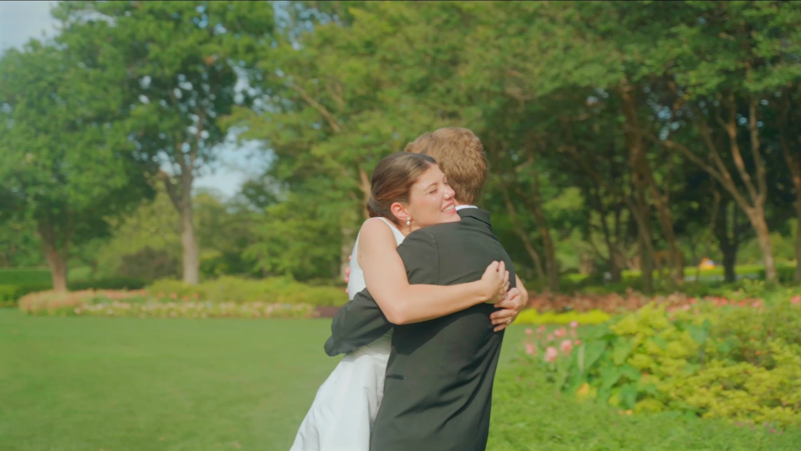
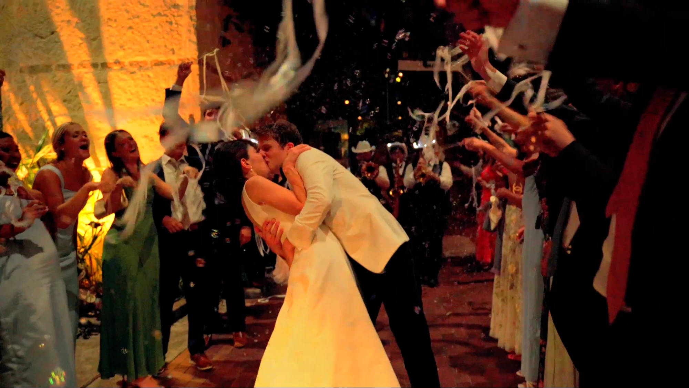
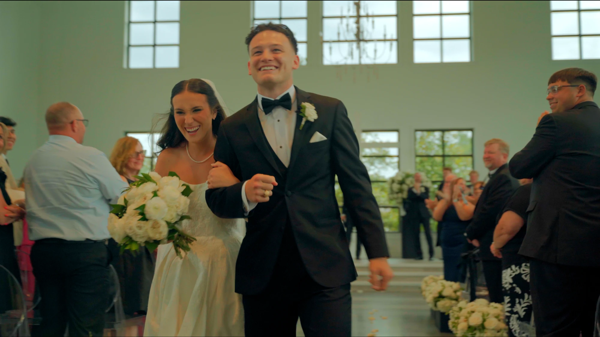
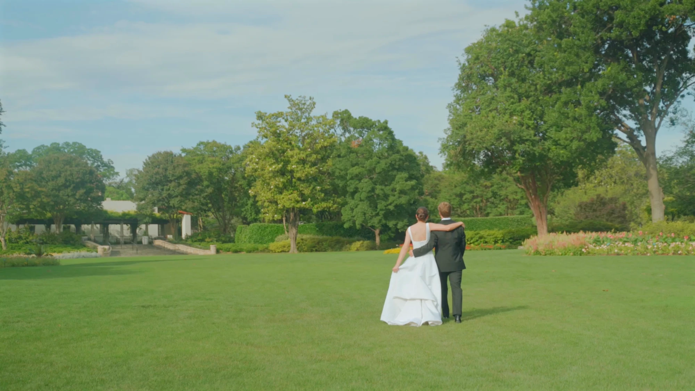
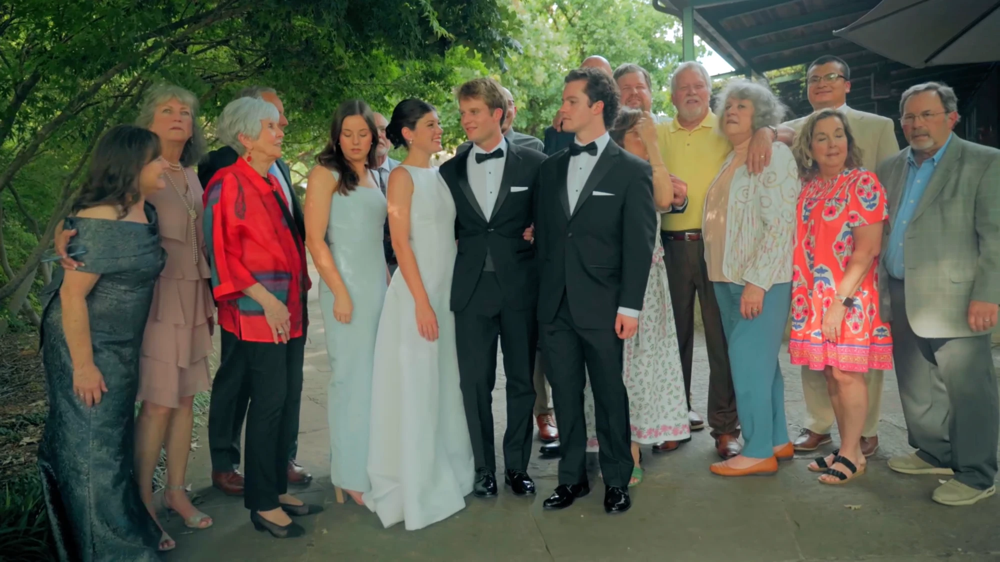
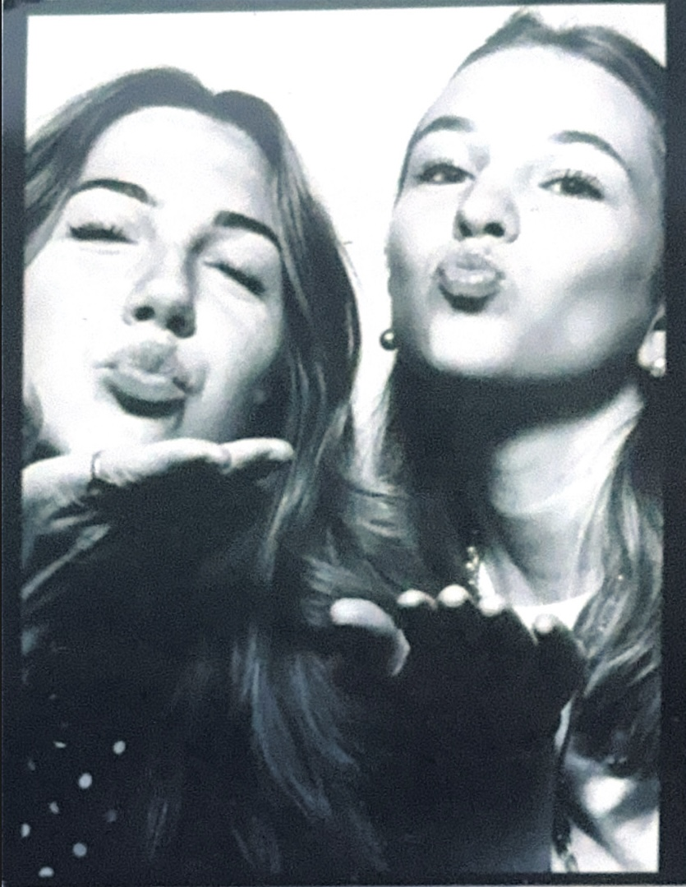
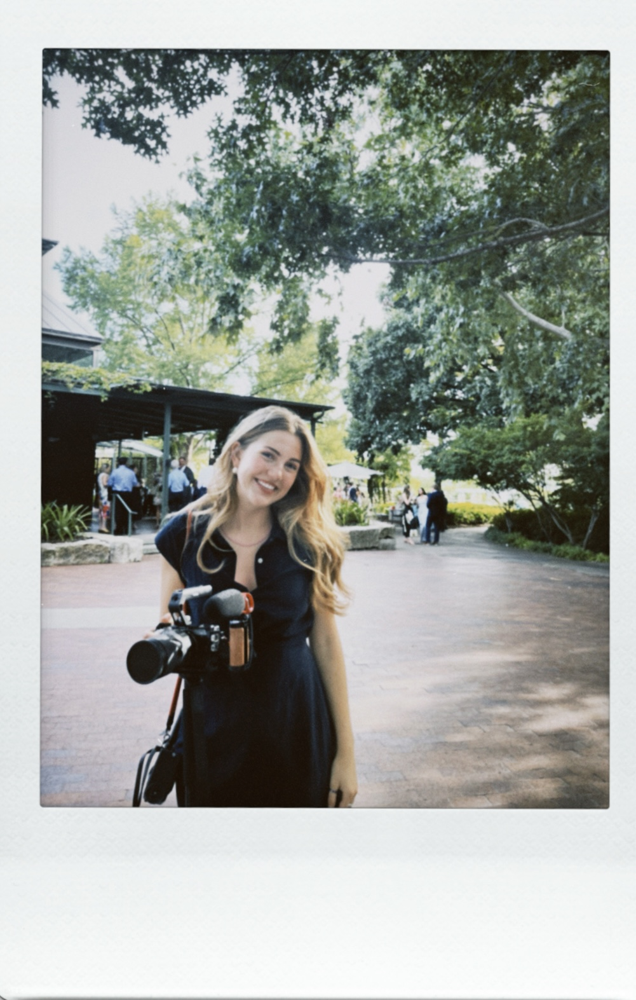
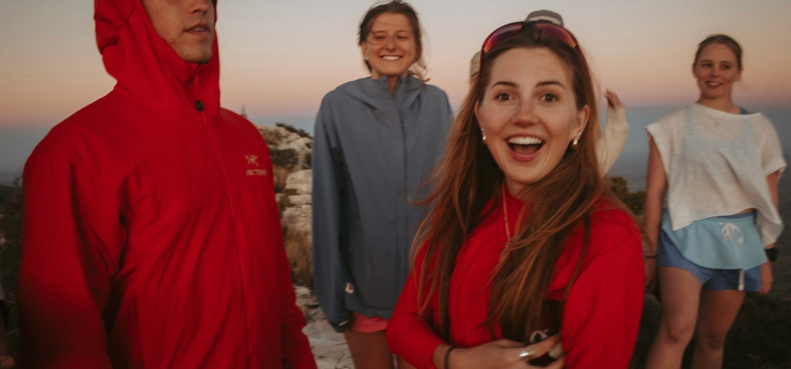
The Filmmaker — Anabelle Marie Merlick
Based in: Central Texas
With a love for honest storytelling, Anabelle captures the little things — the way someone looks at you when they think you aren't watching, the laughter between friends, the happy tears, the imperfect moments, and all the in-between moments that make a wedding day yours. Her films are natural, timeless, and intentionally unposed, with an emphasis on real audio and the story of the day unfolding as it truly happened.
Using either digital, Super 8, or a mix of both, Anabelle wants your film to feel like home: nostalgic, genuine, and completely you.
Inquire